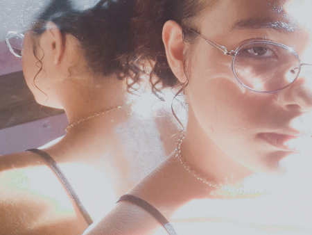

Será que fiquei louco
por pensar em amor?
Talvez eu sempre tenha desejado
esse encontro silencioso da alma.
“As cores foram surgindo em um dia qualquer,
fosse um domingo ou uma quinta-feira.
No lírio dos seus olhos, percebi
que fui e ainda sou extremamente feliz.
Acho que estou sonhando acordado.”

Com os dias no seu apice ficou tao belo e ao mesmo tempo tao gelado,
gelido como a forma que fica minhas maos ao ve-la,acho que estou nervoso?
COMO?estou doente? Se o sonho de ser amado é isso quero que nunca acabe.
EU ME SINTO VIVO....
A forma de me expressar esta sendo tao rapido?
Acho que sou emocionado demais ou so intenso ao seu apice,
mas se não for par ser assim do que adianta amar?
Se amor é tão intenso,porque não posso ser assim,vejo que devo me
conter para não machuca-la ou me machucar...
Com os dias se tornando noite ao piscar de olhos sera que vou perde-la?
Meu crime foi sentir tudo muito profundo
meu castigo foi sobreviver...
Ahh o sol,tão lindo,tao quente e tão intenso vejo que consigo me apaixonar por tudo nele,
mas sera que eu nao irei me queimar se eu me aproximar?
Mas se ele tiver cuidado comigo,consigo me acostumar a ama-lo e se nao for para mim?
Não sei... Queria uma confirmação...
Fui, em meio ao calor dos meus anseios,
procurar uma flor perdida no jardim.
Entre tantas cores e perfumes,
colhi a mais bela,
a mais charmosa,
aquela que parecia nascer da própria primavera.
Ela carregava encantos nos olhos
e leveza no sorriso,
enquanto eu caminhava desajeitado,
vestido de dúvidas e descuidos.
"Preciso mudar",
sussurrei ao vento,
acreditando não ser digno
de tamanha beleza.
Mas, por algum motivo,
ela me escolheu.
E foi em seu olhar
que encontrei a verdade que me faltava:
eu não era pouco,
não era vazio,
não era um homem sem valor.
Eu apenas estava perdido,
como uma flor que floresce tarde,
esperando a estação certa
para revelar quem realmente é.